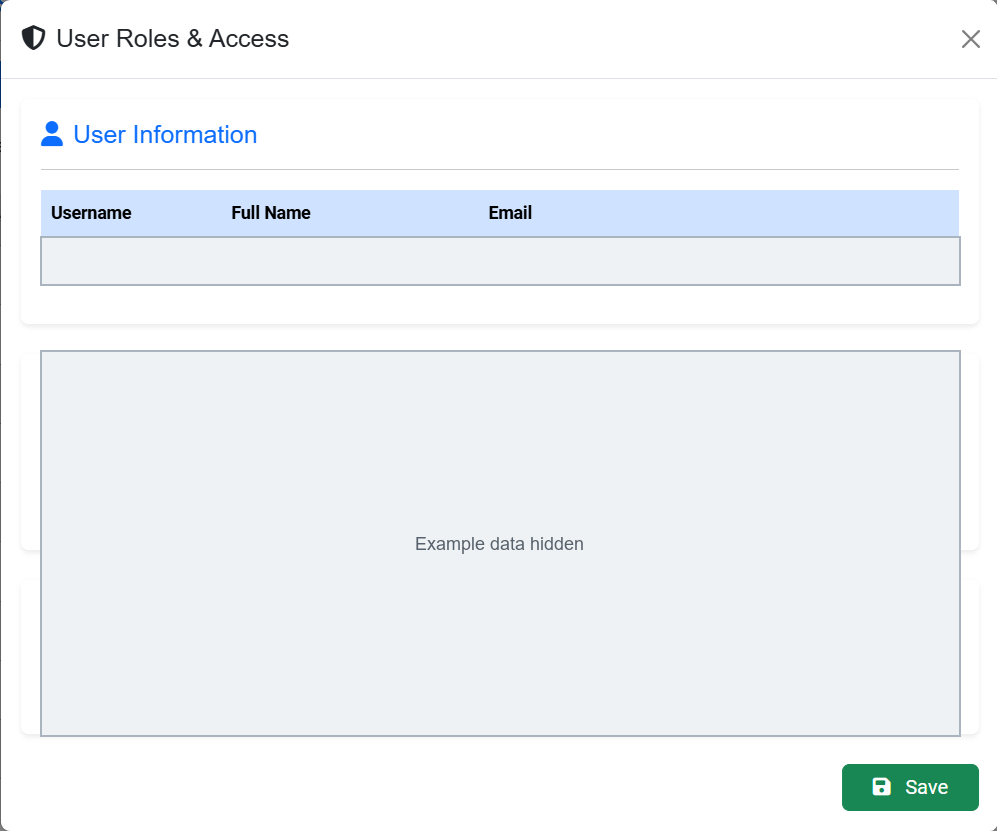
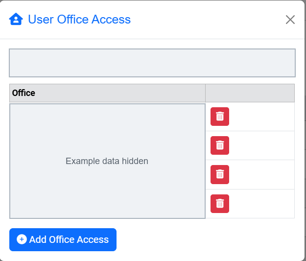
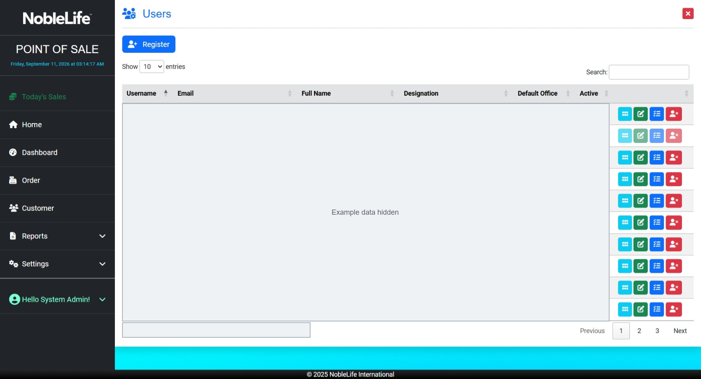
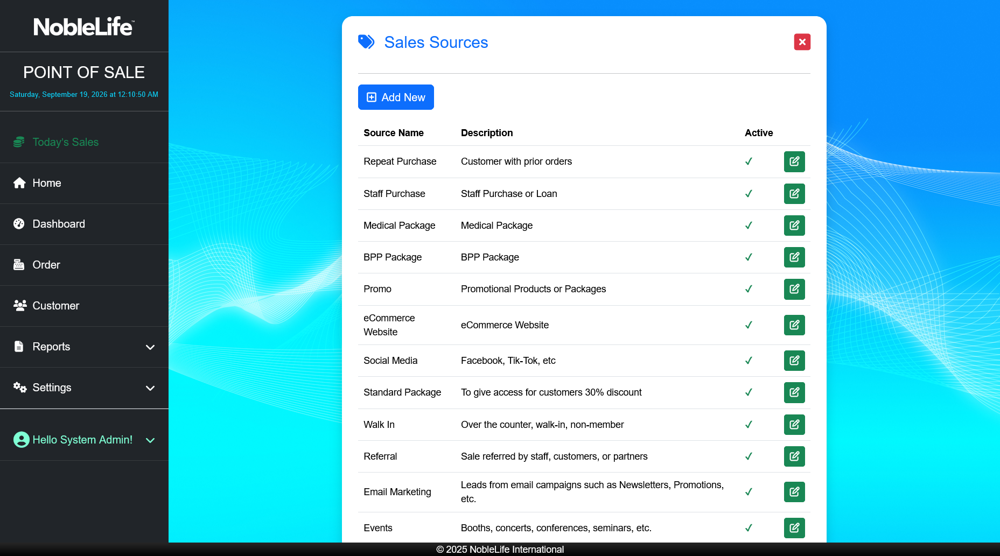

For: Admin
Users, Roles, and Settings
The Settings menu is available to administrators. Your assigned role and office access determine which pages and records you can use.
Manage users and access
- Open Settings > Users. Expected result: The user list appears.
- Open the user record you need to manage.
- Assign the required role or roles and office access. Expected result: The saved user account reflects the assigned access.
- Ask the user to sign in again if their access does not appear to have changed.
The configured roles are Admin, CS, Accounting, and Inventory. The application does not include a separate Manager role.

Figure: Assign only the role and office access the user needs; account details are concealed.
Figure: Review assigned office access; identity and office names are concealed.
Figure: Open an account from the Users list; personal account data is concealed.Maintain offices and setup lists
- Use Offices to maintain office details, country, and active status. Office settings supply regional details used by the application.
- Use Sales Sources to manage the choices available when recording an order.
- Use Utilities > Payment Methods to maintain the method name, description, Service Charge (%), and active status. Only active methods are offered during order entry.
- Use Customer Classes and product price fields to maintain customer-specific pricing.
- Use Product Types and Countries to maintain corresponding form choices.
- Use Background to choose an application background and Themes to select Default, Pulse, Flatly, or Lumen.
- Use Audit Logs to review recorded activity.

Figure: Administrators maintain the sales sources offered on an order. Figure: Review a payment method's name, service charge, and active status (screenshot to be added)
Figure: Review a payment method's name, service charge, and active status (screenshot to be added)
Export data and backups
- Open Settings > Utilities > Backup. Expected result: Export Table to CSV opens.
- Choose a table in Select a table: and select Export CSV. Expected result: The selected table downloads as a CSV file.
A separate administrator-only Database Backup page provides Backup Now and Download Backup; it is not linked from the current sidebar. Ask your administrator if you need to use it.
Figure: Maintain office details and the regional settings used by the application (screenshot to be added)
Figure: Review lookup lists, appearance settings, audit logs, and export tools (screenshot to be added)
There are no tax-configuration, receipt-format, or printer-setup pages in the application. Receipt printing uses the browser print dialog.